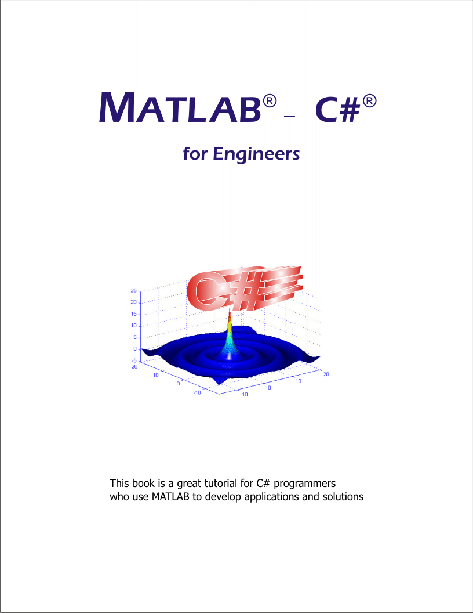
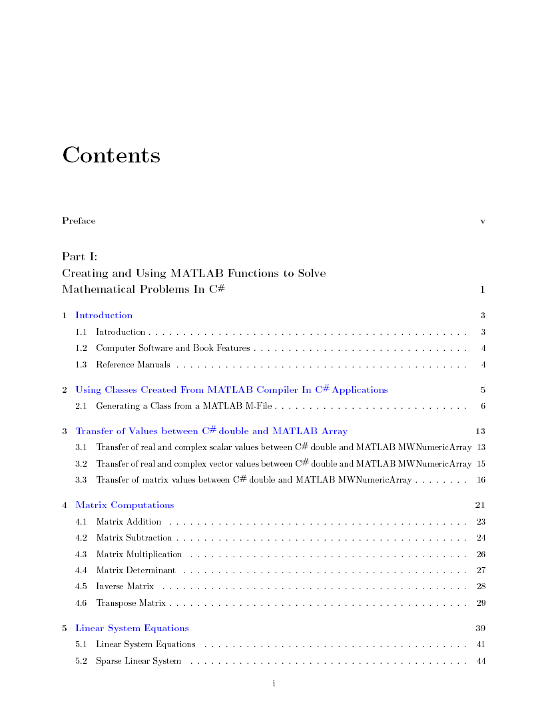
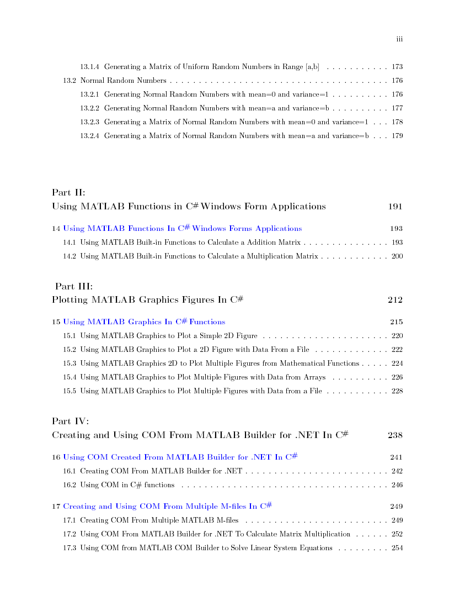
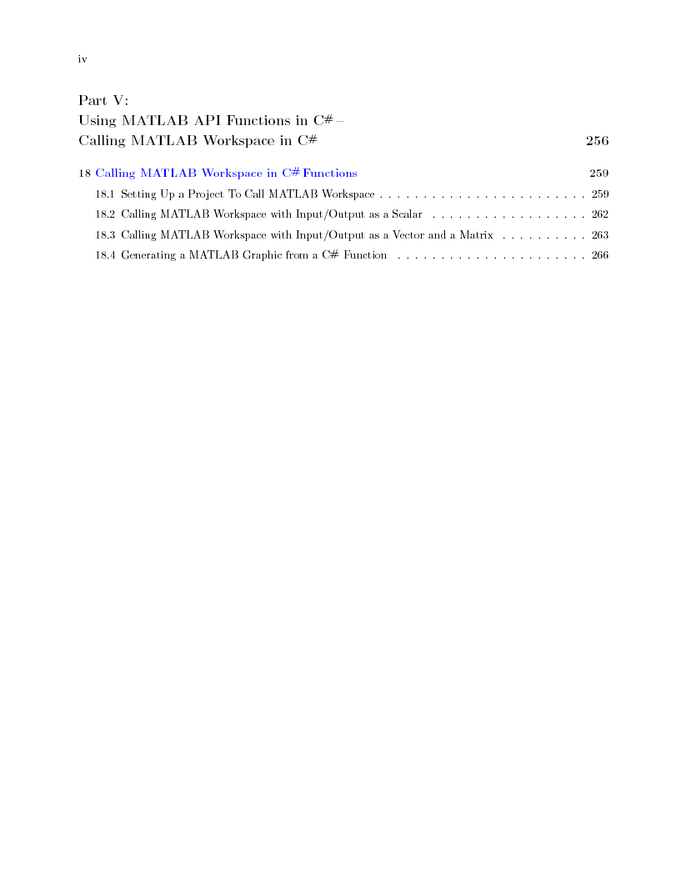

MATLAB® - C#® for Engineers
For MATLAB 2009(b) and MATLAB Compiler 4.11
MATLAB C# Book illustrates the works between C# programming and MATLAB. The book describes very detail how to use MATLAB built-in functions in C# applications. If you are a C# programmer and want to use the quality mathematical built-in functions in your C# applications, to solve mathematical problems in C# programming code, then this book is what you're looking for.
The features of this book are designed to handle following topics:
C# functions call MATLAB built-in functions in the class created from MATLAB M-files to solve the mathematical problems.
C# Windows Applications uses MATLAB built-in functions.
C# functions plot figures from MATLAB Graphics.
C# functions use API functions.
C# functions use MATLAB Curve Fitting Toolbox functions.
C# functions use COM generated from MATLAB M-files.
This MATLAB C# Book is in the pdf format also includes the complete C# code examples of all chapters . The example codes are developed, compiled, and tested in MATLAB 2009(b) and MATLAB Compiler 4.11 with Microsoft Visual Studio 2008, on Windows XP, Windows Vista, and Windows 7. The examples are working on scalars, vectors, and matrixes which are inputs/outputs of functions for every application. In addition, the example codes are portable and presented in the step-by-step method, therefore you can easily reuse the codes or write your own codes following the step-by-step procedure.
The MATLAB C# Book is a great support for C# programmers who are using MATLAB built-in functions to develop applications and solutions. Using the combination of both tools, C# and MATLAB, you have the best tool in your hand to develop and solve your technical problems.
This book is reviewed by MATLAB staff and promoted at MATLAB Book Program.
MATLAB - C# for Engineers, ISBN
978-0-9826516-1-2
MATLAB and MATLAB Compiler are registered trademarks of
The MathWork, Inc.
Microsoft, Windows, and Microsoft Visual C# are registered
trademarks of Microsoft
Corporation




